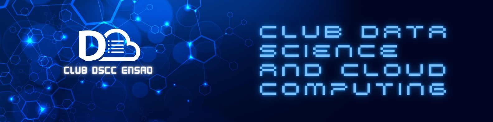

OCTOBRE 2023 — SEPTEMBRE 2025
Membre & organisatrice d’événements
Club Data Science et Cloud Computing · ENSA Oujda
Organisation de la journée annuelle Data Science & Cloud Computing sous le thème « BIG DATA: Applications, Challenges & Opportunities in the Moroccan Context ».
Organisation de workshops autour de projets Data et IA pour les étudiants des classes préparatoires, afin de leur faire découvrir les applications concrètes de la filière et de les accompagner dans leur orientation.
Organisation de la compétition DATATHONX, un hackathon national autour de projets en data science et en intelligence artificielle.
